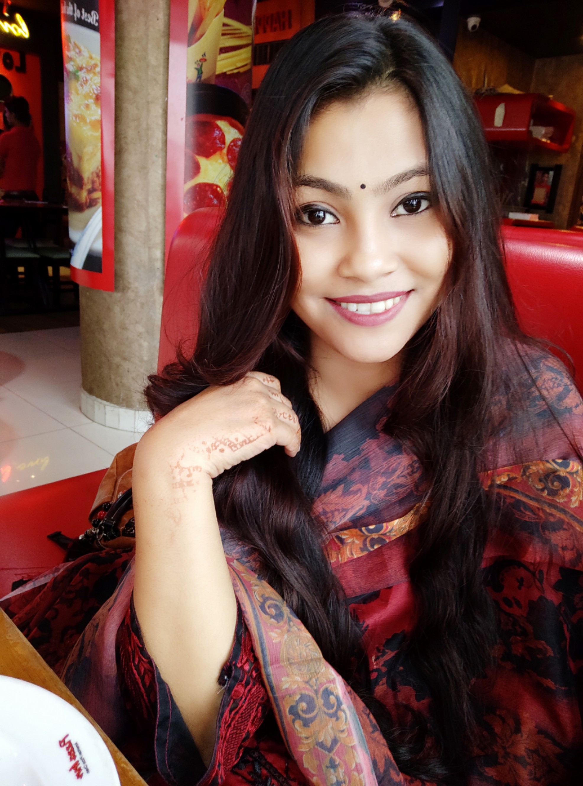
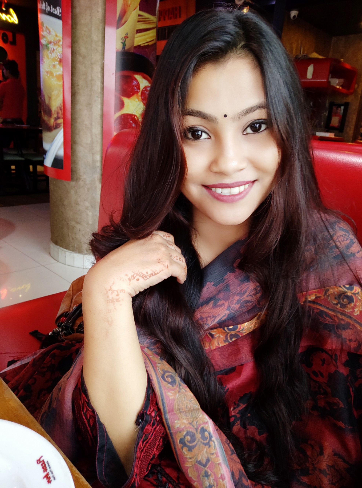

Sanjida Sarker
StudentDepartment of Computer Science and EngineeringUniversity of Asia Pacific, Dhaka
Address: 88, Free School Street,kathalbagan bazar,Dhaka |
 |
Sanjida Sarker
StudentDepartment of Computer Science and EngineeringUniversity of Asia Pacific, Dhaka
Address: 88, Free School Street,kathalbagan bazar,Dhaka |
 |
I am an student in the department of Computer Science and Engineering at UAP Dhaka.
My dream job is working as a system analyst.
My research interests in Database Technology and Web Development.